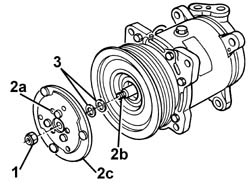
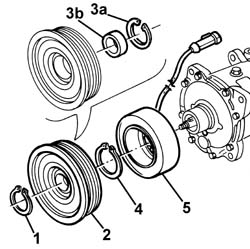
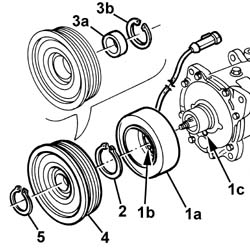
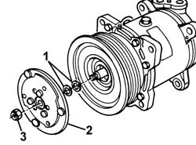
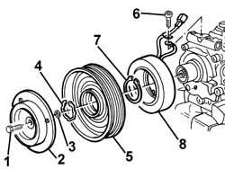
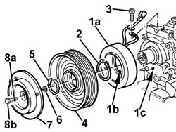

5040A34 pulley with compressor electromagnetic coupling - r+r with compressor removed
- Path
- Procedures > 50 AUXILIARY UNITS > 5040 AIR CONDITIONING CASING AND COMPONENTS > 5040A air conditioner coolant circuit > 5040A34 pulley with compressor electromagnetic coupling - r+r with compressor removed
- Kind
- repair procedure (removal / refitting; the operation number is the code)
- Applies to
- engines: 1.6 TS , 1.8 TS, 2.5 V6, 1.9 JTD 8v , 2.4 JTD 10v; all production periods
- Interactive page
- https://sloeber94.github.io/elrnDB-a156/en/#/3238309
Applies to: engines: 1.6 TS , 1.8 TS, 2.5 V6, 1.9 JTD 8v ; all production periods; only with equipment: Air Conditioner
 Removing
Removing
 Refitting
Refitting1. Undo the nut.
2. Use an extractor with three attachments through the three holes (2a) and shaft (2b) and remove damping plate (2c).
3. Recover the shims.

Applies to: engines: 1.6 TS , 1.8 TS, 2.5 V6, 1.9 JTD 8v ; all production periods; only with equipment: Air Conditioner
1. Undo the retaining ring.
2. Use an extractor to remove the pulley.
3. If necessary, remove retaining ring (3a) and remove the bearing using a press (3b).
4. Undo the retaining ring.
5. Remove the electromagnetic coupling.

Applies to: engines: 1.6 TS , 1.8 TS, 2.5 V6, 1.9 JTD 8v ; all production periods; only with equipment: Air Conditioner
Refitting
RemovingCheck that the pulley and electromagnetic coupling are undamaged and check electromagnet electrical operation if necessary.
1. Fit electromagnetic coupling (1a) in its seat and fit protrusion (1b) into seat (1c).
2. Do up the retaining ring and check it is properly secured.
3. If removed, refit bearing (3a) to the pulley and do up retaining ring (3b).
4. Refit the pulley.
5. Do up the retaining ring and check it is properly secured.

Applies to: engines: 1.6 TS , 1.8 TS, 2.5 V6, 1.9 JTD 8v ; all production periods; only with equipment: Air Conditioner
1. Refit the shims and adjust until the pulley turns freely.
2. Refit the damping plate.
3. Tighten the nut.
Check the pulley turns freely.

Applies to: engines: 2.4 JTD 10v; all production periods; only with equipment: Air Conditioner
Removing
RefittingClamp the compressor into a bench vice.
1. Undo the bolt.
2. Remove the damping plate.
3. Recover the shim/s.
4. Undo the retaining ring.
5. Remove the pulley.
6. Undo the electrical wiring retaining bolt.
7. Undo the retaining ring.
8. Remove the electromagnetic coupling.

Applies to: engines: 2.4 JTD 10v; all production periods; only with equipment: Air Conditioner
Refitting
RemovingCheck the pulley and electromagnetic coupling are undamaged and check electromagnet electrical operation if necessary.
1. Fit electromagnetic coupling (1a) into its seat and fit protrusion (1b) into hole (1c).
2. Do up the retaining ring and check it is properly secured.
3. Fit the electrical lead retainer in its seat and do up the bolt.
4. Refit the pulley.
5. Do up the retaining ring and check it is properly secured.
6. Fit the shims/s and adjust until the pulley turns freely.
7. Refit the damping plate.
8. Apply a small amount of sealant to the first threads of bolt (8a) and tighten the bolt (8b).

Applies to: engines: 2.4 JTD 10v; all production periods; only with equipment: Air Conditioner
Remove the compressor from the vice and ensure the pulley turns freely.